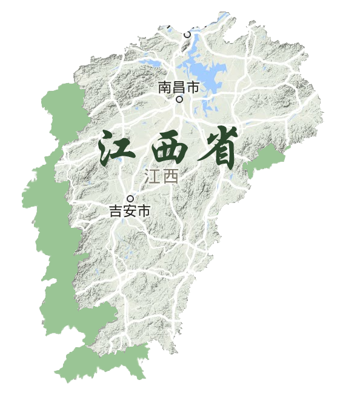
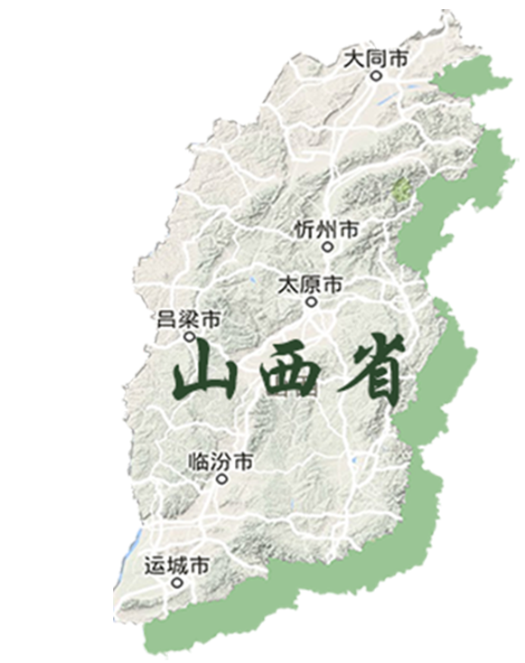

福建
是万里茶道的起点，也是中国最主要的产茶区之一，茶的历史已有上千年之久。茶类的创制要数福建最多，品茶的技艺也数福建最奇，福建茶叶在中国茶叶发展乃至世界茶叶发展上具有重要的历史地位和文化价值。
这里是乌龙茶、青茶、红茶、白茶和茉莉花茶的发源地，每个种类中又有许多佳品，武夷岩茶、大红袍、安溪铁观音、正山小种、福鼎白毫银针、福州茉莉花茶等，形态色泽各有别，甘苦滑涩皆不同，构成了福建茶品的多彩多姿。
2023年5月，“茶和天下
共享非遗”主题活动主会场活动在福州市举办。44项相关国家级非遗代表性项目及传承人受邀参加展览，从茶史、茶萃、茶事、茶缘、茶技、茶具（茶器）等角度展示我国丰富多彩的茶文化。
2022年，福建省干毛茶总产量达459674.28吨，居全国第一，创造的总产值达到3095785.52万元。
茶园总面积为352.05万亩，占全国总面积的7%（数据来源：中国茶叶流通协会）。
茶叶出口总量3.18万吨，同比增加21.98%，占全国茶叶出口总量的8.48%，出口额达5.31 亿美元，同比增加3.58%，占比25.52%（数据来源：中国海关）。

江西
是万里茶道的重要枢纽。九江口是长江黄金水道南北、东西交流的轴心，
号称“三江之口，七省通衢”；铅山县河口镇是重要的茶叶集散地，为万里茶道第一镇；鄱阳湖是古代从北方进入江西的唯一水道，也是万里茶道贯通福建的唯一要道……江西有茶叶的原产地、集散地，有茶叶贸易的大通道、出口港，拥有交通、商贸、茶庄、茶行等一系列文化遗产。
以“三茶’统筹发展 助力乡村振兴”为主题的2022中国(江西)茶产业高质量发展大会于2022年7月20日在“中国名茶之乡”江西省吉安市遂川县开幕，来自全国各地的茶叶科研、教育、经贸等领域的人士汇聚一堂，共话茶产业发展，共促茶文化交流。
2022年，江西省干毛茶总产量达83700吨，
创造的总产值达714000万元。茶园总面积为175.7万亩，较2021年增长2.27%（数据来源：中国茶叶流通协会）。茶叶出口量1.41万吨，同比减少0.23%，占全国茶叶出口总量的3.75%，
出口额达1.3 亿美元，同比增加7.16%，占比6.24%（数据来源：中国海关）。
万里茶道”最开始是红茶占多,后来黑茶当家。作为红茶、黑茶主产地,
湖南段是“万里茶道”中具有独特遗产价值、不可或缺的重要部分。
湖南段由古梅山区域陆路段、资江水路段、
洞庭湖区域段和临湘市境内段四个部分构成,各段的遗产结构较为连续和完整,并且保存了丰富的遗产内容。
3月21日，由国家文物局指导，万里茶道联合申遗办及福建、江西、安徽、湖南、湖北、河南、山西、河北、内蒙古九省（区）文物局联合主办的“世纪动脉——万里茶道九省（区）茶文物联展”在湖南博物院开幕。展览汇聚展示16家文博单位的300余件文物，通过“茶的故乡”、“茶播万里”、“文化之路”、“联合申遗”四个部分，从中国韵味到西式风情，为观众再现了那段车水马龙、茶传万里的贸易之路。
2022年，湖南省干毛茶总产量达247542.86吨，
创造的总产值达到1770088万元。茶园总面积为310.82万亩，
较2021年增长4.27%（数据来源：中国茶叶流通协会）。
茶叶出口量4.76万吨，同比增加14.51%，
占全国茶叶出口总量的12.69%，
出口额达1.4 亿美元，同比增加12.94%，
占比6.74%（数据来源：中国海关）。

湖北作为万里茶道沿线核心地区，自1861年汉口开埠后，凭借两江交汇、九省通衢的优越地理位置，
成为内地最大的茶叶贸易口岸。“十里帆樯依市立，万家灯火彻宵明”便是当时汉口茶港生动的写照，
汉口也因此获得了“东方茶港”的美誉。
2012年湖北率先发起《赤壁宣言》，开启万里茶道申遗大幕，2019年国家文物局将万里茶道列入
《中国世界文化遗产预备名单》，
并把汉口俄商近代建筑群、大智门火车站、江汉关大楼、襄阳码头及会馆、五峰古茶道汉阳桥段、赤壁羊楼洞古镇、鹤峰古茶道南村段7处申遗点纳入其中。
古道悠悠，茶香缕缕，湖北也迎来了茶产业发展的千载良机。
《茶经》言：啜苦咽甘，茶也。广袤的荆楚大地自古就与璀璨的茶经济、茶文化密不可分。
2022年，第25届中国武汉茶业博览交易会在汉口武展中心盛大开幕。 超2万平方米的展会现场内， 设有湖北名茶馆、中华品牌馆、百家争茗馆、紫砂艺术区、茶器工艺品区等5大展区， 全国数百家展团、 1000余家茶产业相关企业同台亮相，联动多网络平台携手茶叶主产区的 30余家知名茶企，现场向全省发放价值500万元的“惠购湖北茶”消费券，进一步激发茶叶消费潜力。
2022年，第25届中国武汉茶业博览交易会在汉口武展中心盛大开幕。 超2万平方米的展会现场内， 设有湖北名茶馆、中华品牌馆、百家争茗馆、紫砂艺术区、茶器工艺品区等5大展区， 全国数百家展团、 1000余家茶产业相关企业同台亮相，联动多网络平台携手茶叶主产区的 30余家知名茶企，现场向全省发放价值500万元的“惠购湖北茶”消费券，进一步激发茶叶消费潜力。
万里茶道河南段以南北居中、通江达河的地理位置优势，
成为重要的茶叶货物集散中心和水陆转运交通枢纽，
是见证茶叶贸易过程中南北方经济、文化交流融合的重要节点。
山陕会馆、大升玉茶庄、福建会馆、蔚盛长票号、广盛镖局、厘金局……漫步瓷器街，飞檐斗拱，石礅木扉，一座座风格独特的当地建筑，是商人在河南赊店进行贸易活动最直接的实物例证，述说着万里茶道的昔日辉煌。
目前，茶产业已经成为河南省经济发展不容忽视的组成部分，截至2020年底，河南茶园面积240余万亩，比2019年增长17.59%；茶叶总产量8.1万吨，比2019年增长7.6%；实现产值137.4亿元，比2019年增长12.29%；茶叶出口7425吨，创汇5300余万美元；茶叶从业人员达135万，2020年全省涉茶产业产值约300亿元，全省茶产业发展势头良好。

山西
的地理位置“极临北边”，北靠广阔的蒙古草原，南接中州，是沟通与掌控茶道运行的大本营。
历史上，以“诚实守信、开拓进取”著称的晋商，
凭借敏锐的商业嗅觉、敢为人先的气魄和雄厚的经济实力，开拓了由武夷山等茶产区至俄国的“茶叶之路”。
从武夷山到恰克图，万里茶道曾见证了晋商“纵横欧亚九千里、称雄商界五百年”的开放传奇。
现如今，山西在万里茶道的线路保护层面也做出了卓越贡献，2023年，
“万里茶道国保单位文化联盟”
在山西太原晋商博物院成立，旨在挖掘以“晋商文化”为代表的中华优秀传统文化，
携手守护中华文化遗产。
时至今日，山西的茶产业经济仍在持续发展。2023年第8届中国（山西）国际茶产业博览会在太原市晋阳湖国际会展中心举行，本届茶博会以“龙城茶宴·晋品好茶”为主题，共设立国际标准展位1800个，吸引全球69个产茶国家（地区）的800多家知名企业参展，展览面积达3.6万平方米，
充分体现了晋商“开拓进取、和衷共济”伟大精神。
万里茶道河北一段，是承接南方茶产区的茶产品，再由张库大道将茶叶送出国门的重要一节。
河北省段茶道历史延续时间长，与“万里茶道”的发展历程相始终，与山西、内蒙古的陆运相衔接，与天津、北京的水运线路相衔接。河北省内的茶叶运输方式多样，包括传统陆运、水运及晚期机械动力运输。
在茶道的推动作用下，河北省内张家口市、宣化古城等地区由军事城堡转为商业城镇，展现了“万里茶道”对沿线城镇功能转变的巨大作用。张家口市是万里茶道在河北的主要集中地。据《察哈尔通志》载，张家口市1918年有大小商号7000余家，银号30余家，年贸易额达15000万两白银，
其中年销砖茶三十万箱，输入羊毛一千万斤，羊皮一千五百万张之多。
张家口成为名副其实的西北“旱码头”，号称 “华北第二商埠” 。
申遗遴选的河北段历史上著名的张库大道，是万里茶道集散、外销路段的交会节点。茶叶运来后，在张家口简单加工，重新包装，然后向外运输。

内蒙古作为万里茶道在中国版图中的最后一站，是万里茶道上重要的中转地和集散地。
内蒙古地区的万里茶道是中原与草原地区经贸文化交流和民间来往的重要通道。 茶叶到内蒙古后，跟蒙古民族的奶加在一起，变成奶茶。 中原民族的北上改变了内蒙古文化特点，万里茶道改变了内蒙古的很多民风民俗，也使包头和呼和浩特成为商业化城市。
内蒙古地区的万里茶道是中原与草原地区经贸文化交流和民间来往的重要通道。 茶叶到内蒙古后，跟蒙古民族的奶加在一起，变成奶茶。 中原民族的北上改变了内蒙古文化特点，万里茶道改变了内蒙古的很多民风民俗，也使包头和呼和浩特成为商业化城市。
呼和浩特是万里茶道重要节点,那时称归化城,大召寺是茶道上的重要遗存。
当时的呼和浩特商贾云集、马驼甚多,每逢大召寺庙会,牧民和内地商人驱赶牲畜,
驮载货物前来贸易。除此之外，包头、海拉尔、乌兰察布的隆盛庄、锡林郭勒盟的多伦、阿拉善的定远营等地区都和当年的万里茶道息息相关。
内蒙古是万里茶道上唯一毗邻俄蒙的地区，
在中蒙俄经济走廊建设中，内蒙古充分发挥区位优势，不断深化旅游对外合作，
促进了万里茶道上的中外交流。内蒙古自治区作为“万里茶道”联通国内外的重要枢纽，
在“万里茶道”的跨境旅游合作中发挥着主导作用。